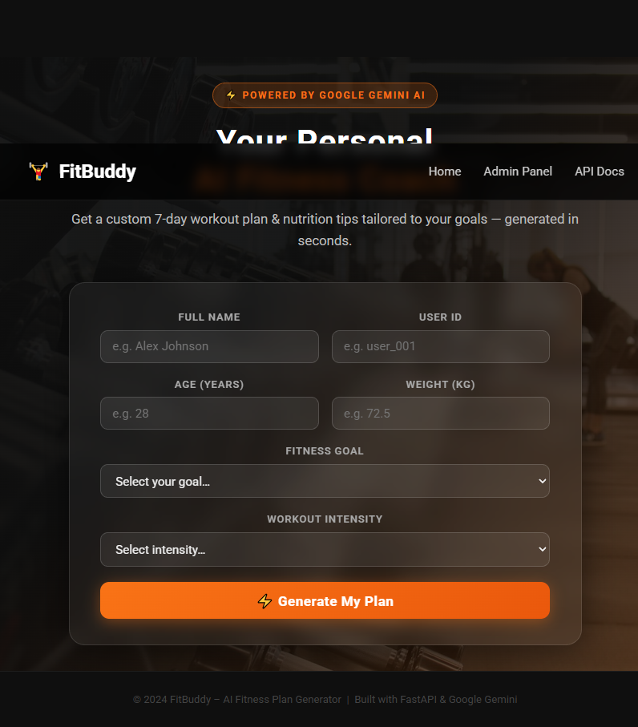
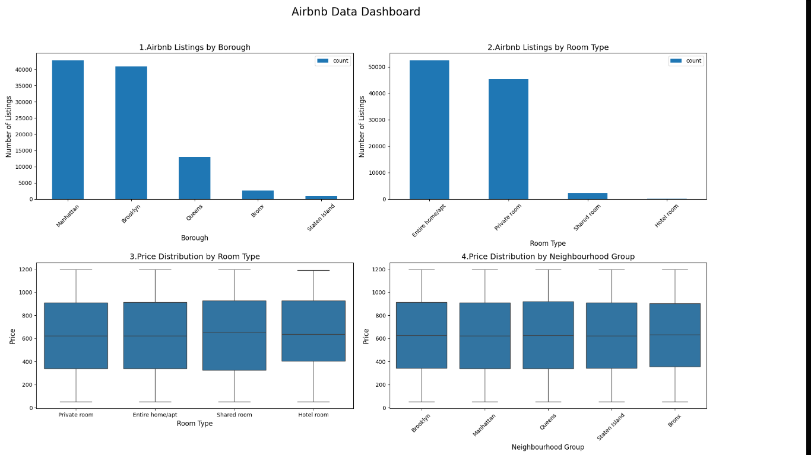

Python
Programming fundamentals and data analysis tasks.
COMPUTER SCIENCE STUDENT
I’m a second-year B.Sc. Computer Science student who enjoys exploring data, learning programming, and creating practical digital solutions. I’m working towards becoming a data analyst by building my technical skills and applying them to real-world projects.
Saranya K
Computer Science Student
01 / ABOUT ME
I’m Saranya, a second-year B.Sc. Computer Science student interested in data analytics and technology.
I enjoy learning how to use data to understand patterns and communicate useful insights. Through courses and personal projects, I’m developing my programming, data-handling, and visualisation skills. My goal is to keep learning, gain practical experience, and grow into a data analyst.
02 / MY TOOLKIT
The tools and languages I’m learning and using to develop my computer science and data analysis skills.
Programming fundamentals and data analysis tasks.
Building a foundation in logic and problem solving.
Learning object-oriented programming concepts.
Working with numerical data and arrays.
Cleaning, organising, and exploring datasets.
Using Matplotlib and Seaborn to present patterns.
Skill bars are visual design elements, not formal proficiency ratings.
03 / SELECTED WORK
Projects where I explore ideas, practise technical skills, and learn by building.

FitBuddy AI is an AI-augmented fitness application that generates personalised 7-day workout plans and nutrition tips. It uses AI to create fitness recommendations based on user inputs, helping users organise their workout routines and nutrition goals.

An exploratory data analysis project using Airbnb data. I cleaned and analysed the dataset and created visualisations to identify patterns, pricing trends, and property availability.
04 / GET IN TOUCH
I’m interested in learning opportunities, data analytics projects, and connecting with people in technology.
kumar30112006@gmail.com